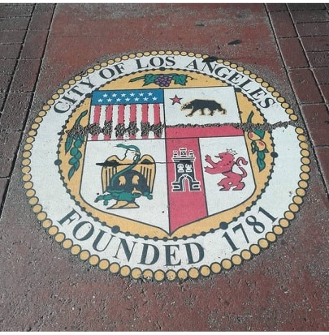
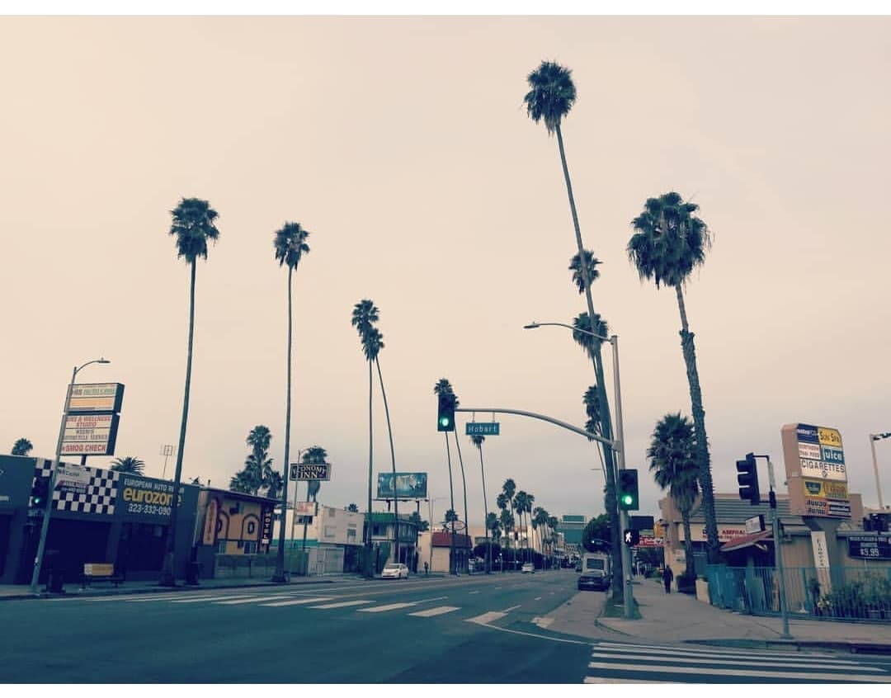
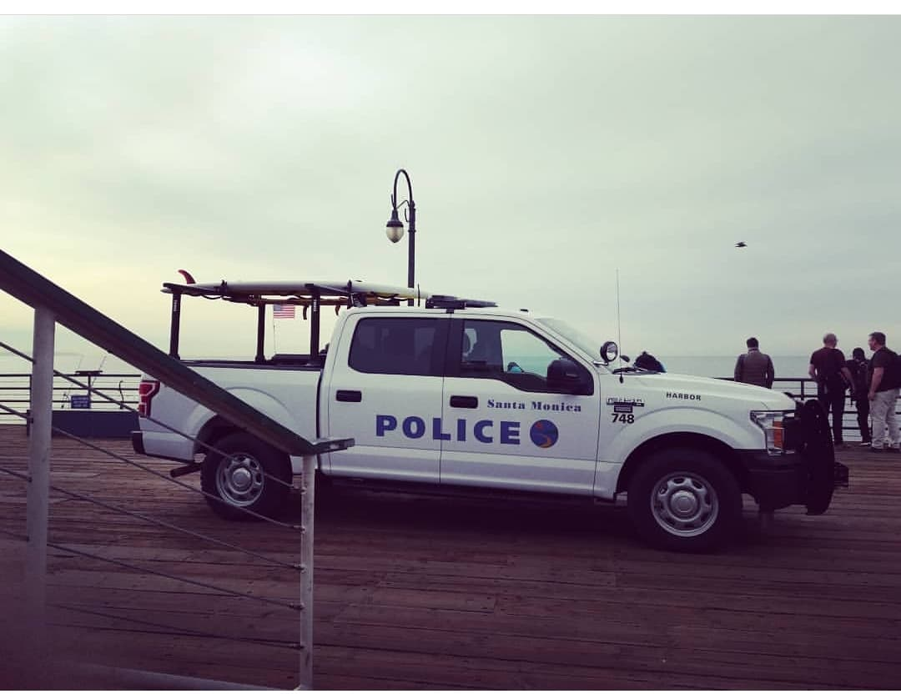
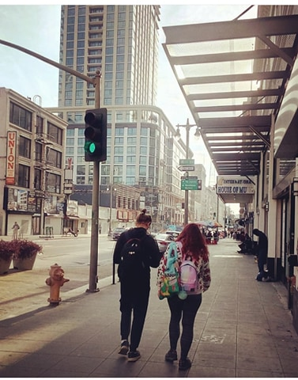
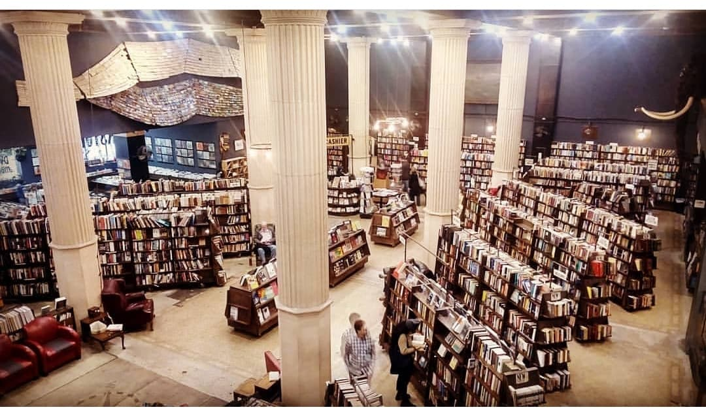
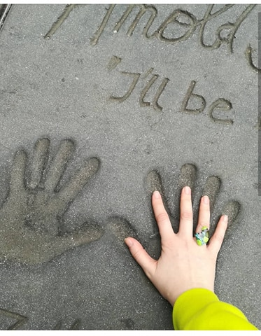
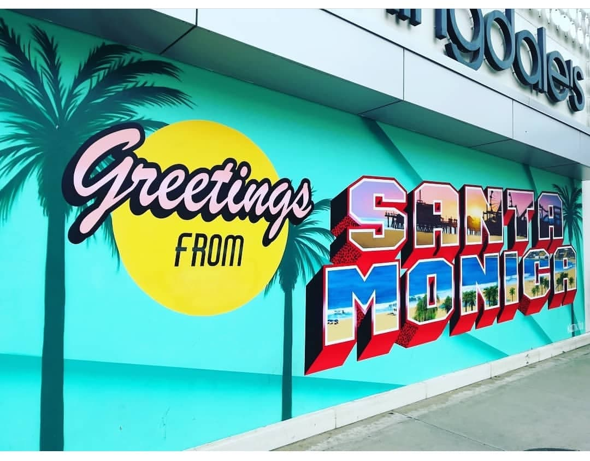

USA 2019 pirma dalis
Kai sužinojau, kad yra tokia šalis, kaip Amerika iškart tapo mano svajonė ją aplankyti. Kada apie ją sužinojau net neatsimenu, gal kai buvo kokie 9 metai, nes nuo tada pradėjau keliauti po platųjį pasaulį. Kiek metų buvo tau, kai išvažiavai už Lietuvos ribų? Kai pagalvoji, be reikalo tiek delsiau ir nekeliavau ten, kodėl nekeliavau, o dėl to kad skaniausius dalykus valgau po pagrindinio maisto, arba dar būtų galima pasakyti, kad taupiau „čėdijau“ tą šalį sau, nes žinojau kad ji man bus nuostabi. Buvo gaila taip va paimti ir pirmai galimybei atsiradus nuvaryti, norėjosi kuo ilgiau tą intrigą sau išlaikyti. Taigi viskas įvyko vietoj ir laiku.
Jūs tik manęs nejuokinkite, kurie sakote, oj neee manęs tai Amerika netraukia. Dabar labai „apsipazorinsit“ ir galbūt išmuš lengvas karštis, ką jums pasakysiu. Deja jūs jau esate patraukti, susiję su Amerika nes, išvardinsiu dalykus kurie yra kilę, gimę Kalifornijoje. Amerika be proto didelė ir įvairi, nė vienas argumentas, kodėl ji netraukia manęs neįtikins. Nes už to pasakymo, kažkas slypi kitko. Tad šį kartą koncentruosiuosi į dalį šios valstijos: Facebook, Apple, Levi‘s, CBS FILMS, Columbia Pictures, GUESS?, Paramount Pictures, Sony Pictures, The Walt Disney Company, Universal Studios, Warner Bros, Simpsonai, Re/Max, Samsonite, Skechers, Gap, Intel, Forever 21, McDonalds, PayPal, Ebay, Google, GoPro, HP, Jacuzzi, JBL, Mattel (Barbie), Netflix, NetGear, Tesla, Twitter, Vans, Viasat satelite, Yahoo, YouTube, ...okey nebenervuosiu. Tai va jei bent prie vieno iš šių dalykų esi prisilietęs, esi deja susietas su Amerika. Nes visos šios kompanijos alsuoja Kalifornija. Ir tai išvardinau mažą jų dalį, didžioji dalis yra galbūt ne tokia žinoma Lietuvos rinkai. Tad jeigu dar bent vieną žodį turi prieš Ameriką, kviečiu nebesinaudoti jų paslaugomis tuoj pat, kad būtų teisingiausia, ar ne? Na jeigu kažkas nepatinka, arba kažko nekenti, tai nenori su tuom turėti jokių reikalų? Ištrink FB, google, yahoo, nebežiūrėk ir pamiršk visus filmus, jau apie Netflix ir YouTube net nekalbu, mesk rūbus lauk, nebandai nieko pirkti per Ebay. Taigi su šia pastraipa noriu parodyti kokia didelė, galinga ir įtakinga yra California. Ir ji yra kiekvieno iš mūsų namuose, norime mes to ar ne.
Los Angeles į kurį vyksime pirmiausia yra antras po New Yorko dydžio miestas Amerikoje. Jame gyvena beveik 4 milijonai. Dar užtvirtinsiu keliais faktais. Vien tik migdolų, kurie yra užauginti Kalifornijoje biudžetas yra du kartus didesnis už mūsų Ašarų Pakalnės šalį- Lietuvos biudžetą. Tai mes kalbame tik apie migdolus, o kur dar, apelsinai, vynas, ojej, man dabar jau galva sukasi. Seniausi ir aukščiausi pasaulio medžiai auga Kalifornijoje. Nesuprantu, kaip gali netraukti tokie įdomūs faktai ir dalykai. Manęs klausia, daug kas ,kodėl pirmai kelionei pasirinkau būtent Kaliforniją o ne kaip įprastai New York? Mes keliavome gruodžio mėnesį, tad NY yra vėsiau o CA (Tai yra California sutrumpinimas) apie +20. Be to CA turi tiek paplūdimių, jos pašonė išsidėsčiusi palei Ramųjį Vandenyną! Ir smalsumas nuvedė būtent čia. Anaiptol nesakau, kad NY yra nesąmonė, man visa Amerika yra įdomi, bet juk nuo kažko reikia pradėti. Patarimų paklausti beveik nebuvo pas ką. Vos vienas draugas, keli pažįstamų pažįstami, bet daugiausiai patarimų gavau iš Faustos Leščiauskaitės, kas nežinote Andriaus Užkalnio draugės, bei ir iš jo pačio. Kiek jų klausiau, visada atsakydavo, labai įdomu ir malonu buvo sulaukti jų dėmesio. Ir man pasirodė labiausiai kompetentingiausi patarėjai, nes patys „serga Kalifornija“. Taigi 2019 metų balandžio mėnesį užmezgiau tą mintį, kad jau laikas Amerikai. Taigi, papasakosiu viską nuo pradžių, kaip kas, nes tikiu yra ne tik pavydžių heiterių mano gyvenimui ir mano kelionėms gyvačių, bet ir rimtų fainų žmonių, kurie tikrai svajoja pamatyti irgi Ameriką, arba šiaip patinka paskaityti. Man tokie patarimai rašiniai būtų labai padėję keliauti, tad su mielu noru pasidalinsiu su kitais. 1 pasiruošimo etapas. Pirkome prieš 6 mėnesius skrydį. Žiūrėjau iš Vilniaus, ir tikrinau SAS/ Lufthansa/ LOT Polish airlines. LOT buvo pigiausias. Vilnius-Varšuva-Los Angeles-Varšuva-Vilnius 1 žmogui 700 eur. Bagažas 23 kg yra įskaičiuotas į bilietą. Nuo Vilniaus iki Varšuvos skrydis trunka 50 min. O iš Varšuvos į LAX (Los Angeles oro-uostas) -12 valandų. Laikas nuo Lietuvos skiriasi 10 valandų. Jeigu pas mus 9 ryto ten 19h vakaro. 2 pasiruošimo etapas Prieš 7 mėnesius rinkausi kur gyvensime, domino apartamentai, namai, butai. Tuo metu per Airbnb 3 savaitėms 3 asmenims namas padoriam rajone Los Andžele kainavo apie 2000-3000 $ Kas yra tikrai nedaug. Bet tuo metu neužsisakiau, o tik likus 5-iems mėnesiams pirkau, tad kainos patapo nuo 8000 iki 14.000 $ ir daugiau. Žinoma tai per daug. Teko atsisakyti gerų rajonų, kaip Manhattan Beach, Pasadena. Tad radau per booking.com : 5 naktys. 3 asmenys. kambarys su vonia ir virtuve -347 $ Hollywood rajone, Los Angeles. 8 naktys 3 asmenys. Viešbučio kambarys su vonia, bei parkingas – 873 $ Lombart gatvė, galima sakyti centro pakraštys, San Francisco. 11 naktų. 3 asmenys. Apartamentai (2 miegamieji, vonia, virtuvė, parkingas)- 1,459 $ Hollywood rajonas, Los Angeles. Prie visų vietų susisiekimas yra patogus 1 min -8 min pėsčiomis iki metro ar bus station. Taigi išvedus 1 asmenio kaina vienai nakčiai vidurkis sudėjus visus apgyvendinamus išeina 37 $ arba 33 eurai. Tai sakyčiau nedaug, kaip lyginant keliones į Italiją išvedus vidurkį 1 žmogui – 1 naktis kainuoja nuo 40 eurų. Aišku Italijoje renkamės 4 žvaigždučių viešbučius, ir nepridėjau miesto mokesčių kurie yra nemaži (5 eurai 1 žmogui 1 parai), tačiau Italiją palieku kitam rašiniui. Na bet kol kas su apgyvendinimu kaip matome nėra brangu CA (California). Bent jau CA city tax viešbučiuose nėra, kaip taikomi Europoje. Be abejo yra pigesnių apsistojimo variantų, bet skylės ar kokio užkampio juk neimsi irgi. 3 pasiruošimo etapas ESTA viza. https://esta.cbp.dhs.gov/ šioje svetainė užsipildyti reikia visokius dalykus ir apmokėti 14 $ žmogui vizos kaina. Apmokėti reikia tik kreditine kortele. Kitaip nepaeis. Ir aplamai kreditinė kortelė yra būtina turėti vykstant į USA, nes su ja nuomositės mašiną, pilsitės degalus (bet galima ir grynais), bei įsigysite SIM kortelę, be kurios prapulsit jau pirmas sekundes tik išėjęs iš oro-uosto. Kadangi mes esam Europos Sąjungos nariai, Barakas Obama palengvino mums keliavimą po USA nes tai yra lengvatinė viza. Tikra viza kainuoja kur kas daugiau. Tad ačiū Obamai. Pildydami ESTA jau turite nurodyti tikslų adresą kur apsistosite Amerikoje. Tad apgyvendinimo klausimą turit išspręsti prieš pildant ESTA. ESTA viza privalot atsispausdinti, lėktuvo bilietus, bei apgyvendinimo adresus, jei tai būtų booking.com patvirtinimus taip pat turite būti atsispausdinę, nes daug kur prašys parodyti= išskrendant, tada nuvykus į USA bent 2 kartus reikės parodyti visus šiuos dokumentus. Na ir aišku keliauti tik su pasu, kurio galiojimas nesibaigs po kelių mėn. Mažiausiai turi likti iki galiojimo pabaigos 6 mėn., taip pat ir banko korteles pažiūrėti ar ilgai galios. Po ilgo pasiruošimo, liko domėtis ką lankysime kur būsime, o tada lieka tik susikrauti protingai lagaminą ir išsikeisti grynųjų pinigų. Nes jų taip pat gerai yra turėti. Kiek žinau lietuviškus bankus reikia perspėti kad keliaujate į USA, jie tada pajungia jūsų kortelę, kad ji ten galiotų, su pvz. daniškomis nekreditinėmis kortelėmis atsikaityti nebuvo problemos, ir bankų įspėti nereikėjo. Bet jos nebuvo pakaitalas nuomotis auto ar mokėti už parkingą. Pasidariau telefone dienų skaičiavimą kiek liko iki kelionės. Jeeetus dar 149 dienos….laukiau žinokite ilgai. Ir vis pagalvodavau, Dieve o jeigu nesulauksiu, o jei numirsiu ar susirgsiu, juk tokia suma pastatyta ir šiaip tiek organizacijos, nieko atšaukti nebūtų įmanoma. Tad apie šią kelionę stengiausi niekam nepasakoti, kad nenužiūrėtų pikta akis. Nes man tai didus reikalas, didesnis už mano pačios vestuves. Iš kur rinkau info? Pagrinde stebėjau įrašus ir story Užkalnio ir Faustos, tai galima sakyti didžiąją dalį info radau ten, aišku, mano visų kelionių pasiruošimas vyksta, ko ne visą gyvenimą, pvz. Visi kas turėjom gerą vaikystę ir žiūrėjom “Baywatch” serialą, jau vaikystėj žinojau, kad va noriu aplankyti Santa Monica Beach. Tai kažkur kažką randu kokiame nors interviu, tai koks pažįstamas prasitaria, kad pvz Long Beach jam labiausiai patinkanti vieta L.A. Kadangi susirašinėju paprastais laiškais anglų kalba nuo 7 metų, turiu nemažą pažinčių ratą visame pasaulyje, kelios kalifornietės draugės taip pat negailėjo patarimų, juk nėra geresnio patarimo, kaip išgirsti vietinio ten gimusio ir gyvenančio žmogaus. Taigi, gavosi tokia, kaip mozaika. Iš skirtingų šaltinių ir skirtingų vietų gavosi kas gavosi. Taisyklės, kaip pasiruošti ir susiplanuoti realiai nėra. Aš nekalbu, kad galima viską patikrinti kokiam TripAdvisor, ar šiaip kokiose forumuose, bet manęs tai nelabai domina, nebent tikrinu tik muziejus. Bet tos vietos kurios kelionėje tampa įsimintiniausios, sutikime, gauname iš lūpų į lūpas, vos ne slapta, arba daug skaitydami popierinės literatūros, esu old-fashion (senamadiška ir labai sentimentali) šiuo klausimu. Ką aplamai ėmiau į Ameriką? Na pirmiausia, tai pagal USA įstatymus negalima vežtis anei jokio maisto, tad tie kurie esate įpratę iš civilizuoto pasaulio keliauti į dar didesnį civilizuotą pasaulį ir imtis dešrų, sūrio ir duonos, šitaip nepraeis. Man iškart puola sakyti, o mes prasivežėm. Šiaip man aplamai atrodo labai šiurpiai, kam tą maistą išviso vežtis, atleidžiama, jei keliautumėte tiesiai į kokius kalnus. Na įstatymai yra įstatymai, ir kai ant kortos yra pastatyta nemaža pinigų suma, be to, atskridus 12 val aplink pusę pasaulio, ir kas jeigu jūsų nosytė nepatiks muitininkėj siauraakiai imigrantei, kuri norės patikrinti ir jūsų lagaminą, ten ras „Taupos“ dešrą, jus galbūt palydės atgal į lėktuvą. Per didelė auka būtų. Tad jei negalima, vadinasi negalima. O kelionėse juk būna visko, sutinki ir malonių empatiškų žmonių, bet ir nelabai laimingų asmenų, kurie norės tik išsilieti ant tavęs. Ir į lėktuvą tikrai neverta imti maisto, neva aš iki Amerikos suvalgysiu, nes lėktuve pilnai užtenka, jų duodamo maisto. Na vandens bonką, aš visada prisipilu oro-uoste, dažniausiai yra geriamojo vandens čiaupai. Nes man mažo buteliuko neužtenka, o ypač skrydžio metu, netenkame daug skysčių, tad kad skrydis būtų kuo lengvesnis reikia nuolat gerti vandenį, galima ir apelsinų sultys. Bet jokio alkoholio ir jokios kavos. Nebent po skrydžio norite turėti galvos skausmą.
Rūbų pasiimu porą tympkių, pora maikučių, porą džempų, vieną sijoną ir apatinio trikotažo ir aišku pižamą su naktiniais ir tapkės. Mokausi gyventi minimalistiškai, nes taip yra lengviau. Visa kita yra vaistai, kosmetika, skaitiniai. Dar be abejo pasidaryti sveikatos draudimą (apie 50 eurų žmogui), nebent turite savo asmeninę kreditinę kortelę, kur automatiškai suteikiamas draudimas. 1 diena. Lapkričio 30 d. Pagaliau kalendorius telefone rodo Lapkričio 30 dieną, ir „days counter“ programėlė skelbiama, kad today you going to USA. Kaip visada Vilniaus oro uostas susireikšminęs, skrenda nedidelis lėktuvėlis iki Varšuvos, žmonių iki 30 o atstovime vos ne 1,5 val kad bagažą priduoti. Ima siutas, visada taip ir su žmonėmis, kuo mažiau matęs ir patyręs tuo labiau susireikšminęs. Pasiekę Varšuvą turime tik 15 min persėdimui. Spėjame, o eilė žmonių laukiančių skristi į L.A. yra daugiau nei visame Vilniaus oro uoste vienu metu. 12 valandų laukiantis skrydis, per kurį gėrimai: vanduo, sultys viso skrydžio metu, vafliukai yra neriboti, jau nekalbant apie normalų maistą kuris teikamas du kartus . Taigi kelis kartus pasnaudžiu, pasižiūriu pora filmų, pasivaikštau po dreamliner, vietos pakankamai, bet tik vaikščiojimui, sėdėjimui nėra ypatingai patogu, apie miegojimo patogumą net nėra kalbos. Labai įdomu žiūrėti pro kur skrendame, o skridome pro Švediją, Norvegiją, Islandiją, Grenlandiją, Kanadą. Atskridę pamatome oro uoste didžiulę Amerikos vėliavą, bet dar sunku suvokti, kad pagaliau esu čia. Praeina geros 3 valandos kol prastovime eilėse, kad praeitume muitinę. Viską darome patys, savitarna, tačiau tenka laukti vis tiek. Kankina laiko juostų skirtumas jau. Tad patariu nuvykimą iki viešbučio suplanuoti iš anksto. LAX oro uoste yra apie 10 terminalų, žmonių padedami atrandame vietą iš kurio važiuoja shuttel bus iki metro stotelės. Atvyksta autobusas amerikietiškas, galvojom kad privatus, nustebome, kad viešasis transportas toks classic cars stiliaus. Vairuotojas juodaodis, padeda sudėti į bagažinę mūsų lagaminus, klausiame kiek kainuoja? - Bro it's free, come in. ( Broli nemokamai, lipkit, ateikit) Iškart įspūdį padaro, žmonių paslaugumas, ir palengvinimas atvykusiems nemokamas transportas. Apie 20 min užtrunka kol pasiekiame metro stotelę. Ten laukia dar viena maloni staigmena, tuo laikotarpiu kuriuo keliaujame su bording pass tos dienos data visas transportas visam L.A. yra nemokamas atvykimo dieną. Belaukiant traukinio užkalbina vietinė moteris, klausia: -Ar jūs šiandien iš kažkur atkeliavote? - Taip! - From where you guys? - From Lithuania, do you know? - Yes, off course. Baltic States. Žodžiu, paklausė ar mes žinosim, kaip nuvažiuoti iki Hollywood, ten kur mūsų viešbutis. Parodėme planelį ranka braižytą. Dar ji patikrino savo telefone, patvirtino, kad puikiai pasiruošę. Atsiprašė dėl smulkaus lietaus ir vėsumos, kuris pasitiko mus L.A. Paklausė kiek laiko būsime, ką veiksime. Žodžiu, man patinka besišypsantis žmonės, ir laisvai bendraujantys. Man yra geriau, kad ir dirbtina šypsena ir laisvas bendravimas, nei atviras susiraukęs žvilgsnis, kuris net neprieitų, jei tau gatvėje pasidarytų bloga, kuris labai būdingas Lietuvoje, bent jau susiraukimas tai tikrai ir nekalbėjimas. Metro važiuojame apie 1,5 valandos, kelis kartus persėdame. Daugelyje metro stotelių budi policininkai, kurie irgi pasisveikina su mumis, ir paklausia: - Hi, guys where you taveling? Policininkai atrodo lygiai taip pat, kaip esame įpratę matyti per amerikietiškus filmus. Graži juoda apranga, kepurės, kaip pas kaubojus. Metro nėra labai tvarkingi ir švarūs, nemažai juodaodžių, valkatų taip pat. Bet niekas neužkabina, o daugiau pataria kaip pro kur patogiau išeiti iš metro su lagaminais, nors nesijaučiame saugiai ir užtikrintai. Nes padaryta yra įtaką, neva čia žmonės visi turi ginklus ir šaudosi. Mane nervina tokia dezinformacija, esame įbauginti medios, apie Ameriką yra nemažai perkreiptos informacijos. Labai patogu tai daryti, nes ne visi aplanko šią šalį, lengviau manipuliuoti. Pagaliau mūsų stotelė Western Hollywood. Bet nežinome į kurią pusę eiti, telefonai nei daniški, nei lietuviški roming neveikia, tad ir interneto nėra. Klausiame praeivių o jie mielai padeda, pasižiūri į savo telefoną, parodo kur eiti. Eidami gatvėmis užuodžiu drėgmės ir šilumos kvapą. Tamsu, tačiau vis tiek įžvelgiu tuos vaizdus kaip iš filmų, gatvelės su kiemais kur auga žolė ir namais, viskas erdvu. Viešbutyje nusimetame daiktus, aš įkalu melatonino pora tablečių ir lūžtu miegoti po 2 parų nemiegojimo. 2 diena, Gruodžio 1 d. 04:30 ryto. Dėl 10 valandų skirtumo kol kas gyvenu nežinau kokiu laiku. Visi miega, o aš „netrivoju“ noriu kuo greičiau išlėkti į lauką ir pamatyti Ameriką šviesoje, pradėjo švisti, rožinis dangus ir ilgos laibos palmės gatvėse, visada galvojau,kai matidavau tokias foto, kad tai foto šopas, bet ten ištikrųjų toks apšvietimas, ypač, kai kyla ir leidžiasi saulė, nereikia nė filtrų naudoti. Išlekiau devėdama raudoną pižamą su baltom širdelėm. Ten mano miestas, nes visi rengiasi kaip jaučiasi, tad dėl to labai patinka Los Andželas. Galima ir nesišukuoti. Pedantams čia tikrai nepatiks. Niekas nekreipia jokio dėmesio į taip kaip tu atrodai, tad atmosfera lyg tikrame kurorte, kur visi yra pilnai atsiputę.
Nueiname į šalia esantį Food for less maisto parduotuvę. Dar vieną neatitikimą pastebiu, daržovių pasirinkimas ir kokybė kokį 30 kartų yra geresnė nei Lietuvoje, kur dažnas teigia, jog Amerikoje jie valgo nesveikai. Nežinau iš kur žmonės traukia tokias paskalas. Arba, kad Amerikoje daug storulių, yra visokių žmonių, Lietuvoje, gal nepamatysime tokių storuli, kaip Amerikoje arba Skandinavijoje, nes Lietuvoje tokie žmonės yra baisiai ignoruojami, jie bijo išeiti į gatvę, dėl žvilgsnių ir patyčių. Kiekvienam save laikantį geros formos primenu, negalvoti blogai apie apkūnius žmones, nes pirma, storulis galbūt tau išgelbės gyvybę ir antra tu pats gal po kurio laiko susirgsi ar pasikeis tavo hormonai, kurie tikrai keičiasi tapsi pats storuliu, o tada galėsim iš tavęs pažvengti. Tad reikia gerbti bet kokio sudėjimo žmogų ir geriausia būtų, kad aplamai mažiau dėmesio kreiptumėte į savo kiogramus, o labiausiai į kitus žmones, nes tai yra pirmiausia labai nemandagu aptarinėti kitą žmogų o antra, tai visiškai ne jūsų reikalas. Nes galbūt tas storulis yra apkeliavęs daugiau šalių, nei tu, arba galbūt jis išgelbėjo ne vieną gyvybę gyvūnui, tad nepamirškite, kad pasaulis tai nėra tik kiek sveri tu. Be to čia labai daug sportuojančių žmonių. L.A. pastatytas ant dykumos, o palmės, kurios čia auga yra atvežtos labai seniai iš Mexikos, jos nepradėjo augti čia natūraliai, aišku dabar jau dauginasi. Pasirinkimas maisto labai didelis ir labai įdomu buvo vaikščioti ir pirkti maistą. Visko ir neišvardinsiu, bet 1 kg dėžė Makdonalds kavos, arba kilograminis Philadelphia tepamo sūrelio manau užtenka, kad suvokti, kad yra ten to ko pas mus vargu ar bus. Nors esu pastebėjus Skandinavijoje panašių prekių, bei kelias Cash and Carry pardėse Lietuovje. Ilgai netrukus su metro nuvykome iki Santa Monica rajono, kuris yra prie vandenyno, pakeliui užsukome į McDonald's, o kaip be jo. Trise pavalgome už 20 dol. Visą kelionės laiką vieną kartą dienoje valgydavome greitą maistą, bei išgerdavau po minimum 1 litrą limonado, nes jų puodeliai tiek talpina ir per 3 savaites aš dar ir numečiau kelis kilogramus, nežinau kaip čia gavosi, o pvz. Stambule po 2 savaičių priaugau svorio valgydama natūralų gryną maistą. Vandenynas visada atrodo geriau už jūrą. Didingesnis pojūtis, grynesnis oras. Santa Monica medinis tiltas kuris filmuojamas ko ne kas antram filme realybėje mano akimis žiūrint yra visiškas kičas. Kur kas įdomiau yra praeiti pro apačią šiuo tiltu. Ramiojo vandenyno vanduo yra visada šaltas, net ir vasarą. Man tai vienodai, nes man i vandenyną užtenka pažiūrėti ir pabraidžioti. Ėjome palei pakrantę iki Venice Beach, kuris yra mėgstamas filmuoti video klipus. Mano patinkančios dainos „giver“ yra filmuotas čia. Nemaža koncentracija benamių, kurie smirda šlapimu, ir visur marihuanos kvapas. Los Andželas yra benamių sostinė, tad nėra ko čia stebėtis. Šiai dienai L.A. gyvena gatvėse apie 70.000 benamių. Dalis jų turintys psichinę negalią, o dalis jų turi priklausomybes. Kaip žinia sveikatos priežiūra yra mokama, o jei neturi pinigų niekam tu neįdomus lieki gatvėje ir gydaisi savo depresiją ar dimensiją kaip išmanai. Dar vienas faktas, ankstų rytą gatvėmis pravažiuoja speciali sanitarų tarnyba, kuri surenka lavonus, nes normalu, juk visi mes mirtingi, net ir benamiai. Metro važiuodamas gali pamatyti tikrąjį Los Andželą, ten vyksta visko. Dėl to budinčios policijos yra nemažai. Šaunuoliai prižiūri tvarką. Kiek žiūrėjau patarimus policijos tinklalapyje turistams patariama neparodyti, kad esate turistai, netraukti ir nežiūrėti žemėlapio metro tamsiu paros metu ypač. Apiplėšimų būna, bet kur jų nebūna. Be abejo metro naudotis įmanoma, mes daug važinėjome visą laiką, ir viskas kaip ir tvarkoje, tik kelis kartus matėme rėkiančius ir su kumščiais daužančius metro sienas ir bėgančius iš vieno važiuojančio metro galo į kitą, tikrai nebuvo jauku, nes nežinai kas bus toliau, bet vietiniai į tokius drama Queen nekreipia dėmesio, tad bandėme ir mes nebijoti. Mano pasakojime aš nieko neketinu gražinti ar nuslėpti, man buvo įdomu pamatyti viską kaip yra iš tikrųjų, be abejonės važiuojant automobiliu ir vengiant tam tikrų rajonų Los Andželas yra visiškai kitoks, bet apie tai vėliau. Grįžkime į Venice Beach. Tai gatvė šalia einanti palei paplūdimį. Ten daug kičo pardavinėjančios parduotuvės, street Art, dainininkai, muzikantai, bibliją garsiai skaitantis juodaodis, kitas juodaodis sėdi su baltu pitonu, .... žodžiu pamatyti vieną kartą yra įdomu. Žolės ten nerekomenduojam pirkti, nes permokėsite 3-4 kartus. Noriu priminti, kad visoje California marihuana, hašas yra legalus. Kur, kaip pirkti? Labai paprasta užeinate į specialią svetainę, ir užsisakote ko tik širdis geidžia, tam reikės banko kortelės, bei amerikietiško mobilaus numerio ir jums pristato į namus, biurą tuojau pat. Tai labai patogu, nereikia važiuoti pačiam, ieškoti dilerių arba eiti pačiam į gatvę pirkti. Esu už legalizavimą žolės, nes pastebėjau, kur rūkoma žolė ten mažiau rūko cigaretes, ir mažiau geriama alkoholio. Tad L.A. mažai rūkančių cigaretes nėra tos smarvės, bei apsirūkę žmonės yra taikūs. Tačiau alkoholį geria, kas nerūko, tad nuo alkoholio kas metus visoje JAV miršta apie 88 tūkstančius žmonių ir JAV tai kainuoja 250 mlrd. dolerių. Sakyčiau, kiek daugoka mirštančiųjų.
Eidami po Venice Beach išsigąstame, nustembame visi, nes ant prieš mus einančias moteris iš dangaus pradeda kristi vištienos kulkšnys, visi pasižiūrime staiga į dangų, ir matome kirai nugvelbę nemažai mėsos nebenulaikė snapuose ir paleido ant žmonių, visi pradedame kvatoti, to dar niekas nėra matęs. Apėję Venice Beach grįžtame pro brangius namus ir viešbučius į metro. Užtrunkame apie 1 valandą kol pasiekiame Hollywood rajoną. Atstumai dideli, nes L.A. miestas yra Lietuvos dydžio. Šalia namų yra 99 cents, parduotuvė, kurioje dauguma prekių yra po 1 dolerį. Kodėl tokių parduotuvių nėra Lietuvoje nesuprantu, nes manau, kaip baziniai buities dalykai, kaip higienos, grožio prekės, dekoras , saldumynai, maistas turėtų būti prieinami visiems, nesakau, kad tos prekės yra kokybiškos, bet pas mus tokio tipo prekes parduoda tikrai ne po 1 eurą. Gatvėje pamatome važiuojančias kelias gaisrines, kurios veža tiek kiek telpa pliušinių meškučių. Mes net sustojame ir žiūrime išsižioję, o tai pamatęs priekyje sėdintis gaisrininkas mums draugiškai pamojuoja, mes atmojuojame atgal. Prisimenu, kiek šie gaisrininkai turėjo darbo, kai buvo gaisrai Los Angeles ir tai vyko visai neseniai. Kuo toliau, tuo labiau man patinka čia, o ypač žmonės, o taip daugumos peiktų Lietuvoje. Negaliu suvokti iš kur lietuviai renka informaciją, kodėl taip patinka melu tikėti ir jį skleisti. 3 diena. Gruodžio 2. 04:50 Rytą pradedu vonioje, į Instagram įkeliu nuotrauką tiesiai iš šiltos vonios, kai žymiu location ir matau telefonas rodo Hollywood, negaliu patikėti, negi aš esu čia? Nežinau ar dabar, kai rašau šį blog vasario mėnesį tikiu kad buvau ten, man vis dar sunku patikėti, kad tai nebuvo sapnas, tai per daug malonu ir nuostabu, kad būtų tikrovė. Kogero reikia daugiau kartų ten nuvykti, kad pagaliau patikėčiau.
Nueiname iki automobilių nuomos „Enterprise“ ir susitariame dėl automobilio, nes artimiausiu metu vyksime į San Francisko, mano svajonių miestą. Bet šiandien dar esame L.A. vykstame į Downtown rajoną, kur yra dangoraižiai, mes čia su spec. reikalu lankome knygyną „The last book store“ patiktų visiems knygų mylėtojams, aišku visos knygos anglų kalba pagrinde, nors mama randa ir nusiperka vieną lietuvišką. Iš įdomesnių galima rasti „Burtininko Ozo šalies receptų knygą“, arba visi patiekalai su kanapėmis. Knygos sudėtos temomis, pavyzdžiui, kelios lentynos apie tai kaip rašyti knygas. Knygyne mes būname ilgai, nervina neskaitantys, o tik ateina pasifotkinti ypač siauraakiai, atrodo labai kvailai. Ko gero nėra knygos kurios čia nebūtų. Man labai liūdna, kad negaliu pirkti viską ką noriu, dėl to kad knygos sunkios, o bagažas tik vienas. Bet vis tiek kelias nusiperku. Taip pat laikas SIM kortelei, kuri kainuoja 65 dol. Ir traukiame į vieną žymiausių vietų „Food Market“ restoranų angarą pavalgyti, išsirenkame buritas, (3 asmenys pavalgome už 38 dol.) viskas be abejo labai skanu, prieš tai Artūras mane užtrenkia budelėje tualete, paprašiau pasaugoti prie durų, nes turiu gerą nuojautą ir nuojauta sakė, kad spyna ši yra įtartina, o Artūras tiesiog norėjo man padėti pilnai uždaryti duris ir tvojo iš visų jėgų, taip įkalindamas mane amžinai. Tada po visko, norėjau atsidaryti, bet spyna buvo jau neveikianti. Tuomet pradėjau daužyti duris, žmonės, kurie turi mažų patalpų baimę būtų gavę širdies priepuolį, Artūras atvedė raktininkę, kuri visomis įmanomoms priemonėms bandė mane išvaduoti, teko palaukti kokią 10 minčių ir pagaliau išvadavo! Toliau traukėme į „Little Tokyo“ rajoną, kuriame pilna japoniškų restoranų, kavinių, parduotuvių ir viskas iš Japonijos, mums labai patiko, ne veltui Japonija yra šalių sąraše, kur norėtume nuvykti, tai buvo geras pasibandymas.
4 diena. Gruodžio 3 d. Jau atsikeliu 05:30 h. Kadangi gyvename Hollywood, tad pėsčiomis patraukiame į žvaigždžių alėją. Tikrai labai įdomu pastebėti, kur kokia žvaigždės pavardė yra įamžinta. O dar šalia žymaus teatro randame žvaigždžių įspaustas rankas, kojas ir parašus, labai įdomu pasimatuoti. Ta vieta daugiau niekuo nepatraukia, daug suvenyrų parduotuvių, šiaip visokių pardžių, žodžiu labai turistinė vieta, bet manau verta pro ją praeiti ir pamatyti tai savo akimis. Valgome meksikietiško maisto „mcdonalde“ kuris vadinasi „El Polo Locho“ (Išprotėjęs Polas) 3 asmenys pavalgome uz 20 dol, jei rašau, kad pavalgome tai turiu omeny normaliai sočiai pavalgome. Taigi viskas kaip make, tik kad čia mexican food. Valgau užsimerkus ir užsigeriu jau tapusiu skaniausiu man limonadu DR. Pepper, nes labai aštru. (Bandžiau Lietuvoje šį limonadą, bet deja nieko panašaus į tikrąjį nėra, atrodo, kad dėl šio limonado teks specialiai važiuoti taip toli). Šiandien toliau nelabai judame, kraunamės mantą nes ryt laukia nuotykiai. Tačiau Artūras vakare važiuoja į vieną didžiausių arenų- Staples, žiūrėti Clippers su Portland Trail Blazers varžybų. Jo įspūdžiai yra vieni labiausiai įsimintiniausi po šių varžybų. Kiekvienas mylintis krepšinį turėtų pasižiūrėti tikrą NBA krepšinį, bent kartą gyvenime, o geriausia du kartus. Aš nerimavau, kad jis nedingtų, kad jo kas nepagrobtų, tad įsirašėme į telefonus sekimo gps programėle, galėjau matyti kur jis eina, ir kur yra, labai geras sprendimas, kai nerimaujame dėl savo artimųjų.
P.S. toliau rašau tęsinį, kaip važiuojame į San Francisko, Alkatrazo kalėjimas, vėl grįžtame į L.A. ir keliaujame į San Diego. Neįmanoma aprašyti visko, tai aprašau tik mažą dalį, ką patyrėme, geriausia būtų tiesiog nuvykti patiems ir pamatyti savo kailiu.
